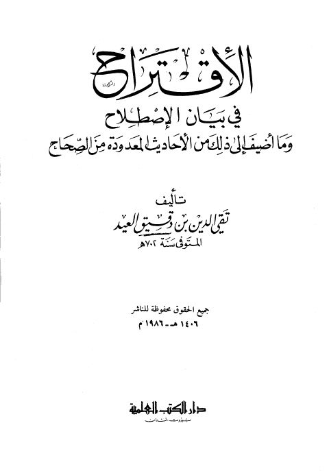

Downloads need an internet connection.
الاقتراح في بيان الإصلاح وما أضيف إلى ذلك من الأحاديث المعدودة من الصحاح
Authors: ابن دقيق العيد
Publishers: دار الكتب العلمية
**▫️ العنوان: الاقتراح في بيان الإصلاح وما أضيف إلى ذلك من الأحاديث المعدودة من الصحاح** ▪️ المؤلف: #تقي_الدين_بن_دقيق_العيد ▫️ الناشر: #دار_الكتب_العلمية ▪️ تاريخ النشر: 1406هـ 1986م ▫️ بلد النشر: بيروت، #لبنان ▪️ الطبعة: 1 ▫️ عدد الأجزاء: 1 ▪️ الصفحات: 146 ▫️ نوع الوعاء: #كتاب ▪️ التصنيف الرئيسي: #الحديث_وعلومه ▫️ التصنيف الفرعي: #تخريج ۪